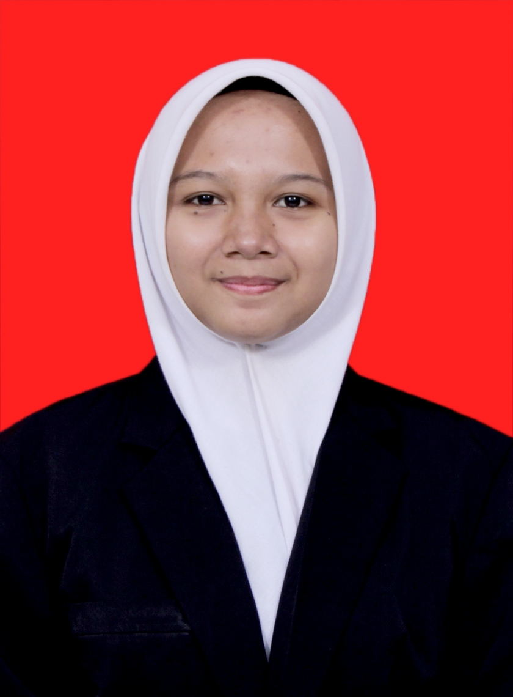

HALO, SELAMAT DATANG!
Saya adalah mahasiswa Sistem Informasi yang memiliki ketertarikan pada teknologi, pengembangan diri, dan kreativitas.

GET TO KNOW ME
Perkenalkan, saya Elfaticha Irwani. Saya merupakan mahasiswa Program Studi Sistem Informasi di Universitas Kuningan.
Saya memiliki ketertarikan dalam bidang teknologi informasi, khususnya dalam mempelajari bagaimana teknologi dapat membantu menyelesaikan berbagai permasalahan dalam kehidupan sehari-hari.
Selain bidang akademik, saya juga senang mencoba hal-hal baru, mengembangkan kemampuan diri, dan melakukan kegiatan kreatif seperti baking.
Elfaticha Irwani
20250910060
Kuningan, 18 Juli 2007
Kuningan, Jawa Barat
Sistem Informasi
MY JOURNEY
Perjalanan pendidikan yang telah saya tempuh.
Sekolah Dasar
Sekolah Menengah Pertama
Teknik Komputer dan Jaringan
Program Studi Sistem Informasi
WHAT I CAN DO
Beberapa kemampuan dan minat yang saya miliki.
Memiliki kemampuan dasar dalam menggunakan Microsoft Word, Excel, dan PowerPoint untuk kebutuhan administrasi dan pengolahan data.
Memiliki minat dalam membuat berbagai jenis makanan dan kue sebagai bentuk kreativitas serta pengembangan keterampilan.
LET'S CONNECT
Jangan ragu untuk menghubungi saya melalui informasi kontak berikut.